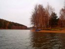
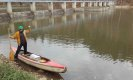
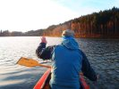

Úvod zimnej sezóny 2015
2015 · Slovensko, Vysoké Tatry
Úvod zimnej sezóny 2015
Ani sme sa nenazdali a už nám ďalšia zimná sezóna zaklopala na dvere. A hádajte čo? No nič, na rozdiel od cestárov nás neprekvapila, lebo šak každý má kalendár a vidí, že sa to blíži (teda až na cestárov). Mali sme dosť času na prípravu. My akože mladšia vetva nášho klubu sme si dali malú prípravu už v novembri. Malé sústredenie na Vysočine, rodný to kraj nášho Candátka. Nuž som ho takto navštívil jeden víkend. Candátkov pôvodný nápad splaviť miestny potok. keď budú „vypouštet hráz“, sme museli prehodnotiť, kedže tú hráz v skutočnosti nejako nevypoušteli, kluci. No a splavovať to po kameňoch som zrovna moc netúžil. Tak sme s tým vybabrali a po krátkej a intenzívnej porade v hospode Na Kocande, sme zobrali kánoe a hybáj na Trnávku – Candátkov domáci rybársko/plavecký revír. Na palubu sme zobrali niečo na zahriatie, lebo akože kosa bola statočná. Ja ako háčik a skúsený Candátek ako kormidlo. No super zábava, sranda jak hovado by sa dalo povedať J. Musel to byť na nás pohľad z brehu – na dve bytosti v tej kose, jesennej hmle na kánoe, čo sa buď nahlas dohadujú, alebo ešte hlasnejšie smejú. K večeru sme sa aj šťastlivo dostali na breh, 50% (teda ja) aj trochu mokrý, keďže som hodil nedobrovoľnú šípku do vody, ale akoby povedal predseda, hrdinovia sa rodia iba v ťažkých podmienkach a takéto parádne novembrové premrznutie bol ideálny základ pre tatranské chladné decembrové dni J len dúfam, že nie pre nekontrolovateľné úniky moču J))))
Teda aspoň pre mňa, chudáka Candátka som tam nehal samého, s ostrými čakanmi, čakajúceho na ten správny okamih J. Ale tak chalanisko sa doma nenudí rodina, les, mrtvola, práca, rodina, les, mrtvola, práca, rodina, les, mrtvola, práca... pestré, ale je v poho ešte nezošalel, aj keď sú tam isté náznaky psychickej nestability, hehe...





Úvod
Nuž teda písal sa 16.12.2015 a my dvaja s Horárom upaľujeme na otoč do Tatier. Usúdili sme, že podmienky už budú dostačujúce na to, aby sme sa vtrepali do Birkenmajera v JZ Velickej steny http://www.tatry.nfo.sk/cesta.php?obr=stity//0952//09520806.p. Už dva roky sme poškulovali po tej ceste, tak sa to konečne podarilo vystihnúť. Ráno úžasná inverzia a ticho, v doline ani nohy.., kto by sa tu aj v stredu potuloval. Nuž sa nezdržujeme a už sa aj pechoríme pod nástup, našťastie je to čo by kameňom dohodil zo Sliezkeho domu. Zhora nadol sa k naším nohám vinie krásna ľadová stužka, tenká, ale bude nám to stačiť. A podmienky v ceste v tento skorý dátum? Nuž leziteľné, ľad bol ešte nie moc hrubý, skôr tenký, takže ani skrutka zavrtať, skala ok, tráva ešte mäkká, nepremrznutá, ale strmý sneh bol perfekt, takže celkovo za 3. Počasie a atmosféra v doline za 1. V hornej časti žľabu sme odbočili doprava - Horár inštinktívne povedal, že pome vpravo a tam nakŕkneme do centrálneho žľabu Velických veží, možno tam nájdeme nejakú zábavu. Pred rokom sme v spodnej časti ťali do Nevestinho závoja. A hľa, zábavka tu naozaj stála - rovno pred nami sa objavil pekný kúsok konečne krásneho kompaktného ľadu, takže zatiaľ čo sa hmla rozplynula, my sa prebavili v ľade, ešte pár metrov a smerujúc do Sedla pod dvojitou, sme preťali Granátovú lávku. To už hrialo parádne podvečerné slniečko, za hoďku sme už aj na chodníku pod Sliezkym. Ešte povinné dve v úplne prázdnom Sliezkom a padáme dole, do BC a do BA.. Nuž úvod vydarený.


Jadro
Nasledujúca túra bola už vo sviatočnom šate. Keďže to bolo medzi sviatkami, kedy sa smerom k Silvestru každoročne lepší počasie, inak tomu nebolo ani koncom toho minulého roku. Síce boli sviatky, ale vo sviatočnom sme sa túru nevybrali. To skôr v nefunkčnom prádle, ktoré tak veľmi zaujalo Dušanka a Horára, že si so mňa robili ráno prdel skoro celú cestu na Popradské. Vzniklo to ráno keď som sa obliekal do nového spodného prádla, čo samozrejme starí kujóni hneď zmerčili a nasledovalo sto otázok, že prečo nové, načo, za koľko, odkliaľ a bežné tie ich strááááášne, ale naozaj strááááášne vtipné otázky a poznámky ešte v skoré ráno v BC, keď mám ešte zalepené oči a nemám síl sa brániť. To sú vtedy na koni, lebo oni vstávajú so sliepkami J)))))). No a ja som im povedal, že to som kúpil v Rempe. No to som ani nemal vysloviť, lebo skoro pukli od smiechu, že kde a čo som to kúpil. Bolo že to veru zábavy. Okamžite to premenovali na „nefunkčné prádlo“ namiesto funkčného a bohovsky sa na tom bavili až ich zadúšalo J. No ano, kupil som to v Rempe, no a čo, lebo akosi ma už nebaví chodiť do športových obchodov a tam počúvať premúdrelých predavačov, ktorí ovládaju abecedu alpinizmu od A po Z a ešte aj odzadu a naspamäť. Človek keď sa započúva do ich rád, tak má pocit, že sa rozpráva s vlkom ošlahaným vetrami minimálne po dvojtýždňovom bivaku v severnej stene Eigeru... No nič, dorazíme ráno na Popradské po zľadovateľom chodníku a ako ináč, Horár a ja po čaji, Dušanko pivečko. A jedny párky pre troch. Dobre, prášime pod nástup do SZ steny Tupej. Ale čo to? Sadla hmla. Sakra šak do toho nevidíme. No tak veď poďme a uvidíme. Išli sme a neuvideli sme.. ideme, ideme a Horár sa zastaví kukne smerom do steny (do biela) a hovorí. Ok chlapci tu by to malo byť chlapci, preskočíme potok, kosku a sme pod nástupom do http://www.tatry.nfo.sk/cesta.php?obr=stity//0936//09361013.p. Pozrem na neho, potom do biela a hovorím si fííííha tak ty si iný borec, keď vieš, že sme na správnom mieste. Tak nechcel som pripomienkovať, aby som nepokazil túto jeho hru, iba múdro prikývnem, „jasne ano tuto tušim“ J! Kým dojde predseda, my už sme za potokom, takže nedostal priestor sa vyjadriť. Nuž tak ideme už po šotoline, svah naberá na strmosti a furt vidíme len biely prd, nech ostríme jak ostríme tak nič, hmla nie a nie sa rozpynúť. Ale predsa len trošku vidno, všetci traja si staneme čumíme, Horár vytiahne sprievodcu a začne, že „tak podľa obrázku a toho čo vidíme, by sme mohli byť tu. Veď to je jasné tu je skalný výbežok, tu flak kosky, tu tá rampa a tu zľava nastúpime. Tu ešte kúsok vľavo je úplne nezameniteľné Puškášové rebro, typické jeho“, kukneme na obrázok – ten je ok, pekný farebný, potom kukneme pred nás a tam zase nič - bielo. Už nehovorím ani jasne, nič, ale predseda sa predsa len zmohol i vraví. Tak ano keď si vsugerujeme, že sme správne tak sme tu a hotovo. Rehot. Obliekame takí vsugerovaní sedáky, veď sme tuJ. Nastupujeme do žľabu, ideme bez lana hore strmým žľabom, už sme na úrovni kde končí hmla a nám sa rozprestierajú krásne výhľady do Mengusovskej doliny. Hmla definitívne ostáva pod nami. Žľab naberá na strmosti, ale každému to vŕta v hlave, že ideme ním nejako pridlho... v diaľke vidíme 50m skalný prah, ktorý nám stojí v ceste a jasne sa nás pýta – a vy chlapci kam ste sa vybrali? Tu už zastaneme pozrieme na seba, potom do sprievodcu, zase na seba a je to jasné. Sme úplne v inej ceste ako sme pôvodne plánovali. Sme kus vpravo v http://www.tatry.nfo.sk/cesta.php?obr=stity//0936//09361015.p, nuž predseda mal zase raz pravdu. Keď si vsugeruješ, že sme správne tak sme tu J. Takže sa blížime k tým skalám, zvonka to nepôjde, nuž vchádzame do jaskyne pod prahom. Ale tak dobrá, fajná, ani nefúka, krásny výhľad. Tu už aj nachádzame v stene nabité zo dve staré skoby a slučku. Najprv to vypadalo neleziteľné po čistej skale s mačkami, ale ono to pôjde. Horár sa na to podujal, batoh nám necháva dole a už aj mastí hore holými rukami a s čakanmi za sedákom. O chvíľu mizne za skalou. Za ním predseda. Prelezie pár metrov a už kľaje, že má omrznuté ruky a že v nich akosi nemá cit, ale tak nakoniec flopom prelezie malá skalnú vyvýšeninu, mizne za horizontom a je hore. Teraz ja. Horárov malý batoh, vkladám do môjho väčšieho batohu. Teraz mám dva J. Super som vyvážený a stojí sa mi dobre. Hehe. A teraz ešte liezť. Aj som si istý, že mám ruky v pracovnej teplote, čiže zahriate a pripravené zvliecť rukavice a začať liezť bez nich. Nuž idem na to, ale hneď cítim ako ma dva batohy ťažia dozadu do záklonu, toto našťasie vyvážujem mojím vypracovaným brušným svalstvom J J J. Jedného problému sa zbavím a už aj horí inde – kua čo to, šak mi začínajú ruky omŕzať akosi rýchlo. No to ozaj. Snáď po 5.metroch už nemám ani cit v rukách a od lakťov hore, ako keby som mal nejaké dve drevenné protézy. Veď ani neviem, či sa toho chytu držím alebo nie. Teda vidím, že ano, ale necítim to J, sranda preveliká, musel som sa chytiť slučky, ale tak neochvejne tlačím meter za metrom a o pár minút stojím pri predsedovi na štande. Ten sa iba ticho uchechtáva, rukami šermuje s lanom a z nosa sviečka. Pardon nie - to je len zlý odraz slnka J, hra svetla a tieňov. Dobre vie o čo ide, teraz mi rozmŕzajú ruky a následuje bolesť. Darmo niekedy sa človek zabaví aj pri -13, nie síce moc, ale ani málo nie J. Teraz už len žľabom hore, je tam snehoľad, tak sa ide naozaj super, nie je to zase až taký kúsok, ešte nejaká tá kvapka potu vytiekla do nefunkčného prádla. Horár, ešte dĺžku pred výlezom zo žľabu, odbočí naschvál vpravo do skál, lebo my predsa nebudeme chodiť po snehu, ale z „cvičných dôvodov“ ideme po krásnom mixovom teréne a zhora vykrikuje „chlapci nie rukami, ale čakanmi po tráve!“. A naozaj, trávy su fantasticky premrznuté a my si užívame posledné metre v stene za prekrásneho zimného, mrazivého podvečera. Už vidím červené slnko na skale, znamená to, že o 20m ma to vypľuje von zo žľabu. 10, 5, 2... hotovo. Teraz už viem, že dobojované nebolo, lebo ten hlavný boj ešte len nastal cestou dole. Ešte sme hore na Tupej počkali úplne krásny, krvavý, inverzný západ slnka s čajom v ruke. Toto sú chvíle, na ktoré sa nezabúda...ticho preruší zvuk električky idúcej z Hágov na Štrbské. Potom už len po tme dole, na Popradské. Tam dáme po dve a ľadovým chodníkom hurá k autu na Štrbské. To bol teda fakt boj, padali sme ako hnilé hrušky, až sme dopadali k autu. Na záver ma ešte zaujala Predsedová technika prezúvania topánok, keď naštartoval auto, vybral tenisky (keďže išiel šoférovať) a hodil ich k výfuku. Tu sa sklonil k nim a začal akt prezúvania nad dymiacim výfukom.. hovorím si asi mal chalan toho čerstvého vzduchu za celý deň až až J. Túru končíme, tak ako sme ju začínali – hlasným rehotom J.
Ráno na druhý deň – 30.12 Predseda Dušanko zdrhá potichúčku domov do Važca a my sme sa s Horárom vybrali zaliezť aj nejaký ten ľadík. Hlavne po včerajšku, aby bol krátky nástup. Aj bol. Šašo to istil. No a dobre, že sme tam išli, lebo bol naozaj v perfektnom stave. To bola krásna dvojdňová rozlúčka s alpinisticko-Horcovým rokom 2015.


Ivík
p.s. záver nie je, zimná sezóna pokračuje...
Pôvodná stránka: archív horecsport.sk